Introducción a GitHub Projects
Todo proyecto, independientemente de si se desarrolla mediante una metodología Dev(Sec)Ops, ágil u otra, debe llevar a cabo un control del trabajo. Es muy importante para el éxito del proyecto. Vamos a presentar GitHub Projects como herramienta de planificación y organización del trabajo.
Al finalizar, sabrá:
-
Qué es GitHub Projects.
-
Qué es un proyecto en GitHub Projects.
-
Cómo crear y suprimir un proyecto.
-
Qué son las vistas del proyecto.
-
Qué eventos genera GitHub Projects que pueden disparar flujos de trabajo de GitHub Actions.
Introducción
GitHub Projects es una herramienta para la planificación y organización de trabajos. Actualmente, se puede usar gratuitamente. Recordemos que la organización de trabajos (work organization) tiene como objeto registrar y planificar los trabajos a realizar para lograr nuestro objetivo, el desarrollo de un producto de software. Todo ello de la manera más óptima, eficiente y efectiva posible.
GitHub Projects considera un proyecto (project) como un conjunto de tareas representado mediante algún tipo de forma útil para su organización, asignación y visualización. Un proyecto puede estar asociado a uno o más repositorios de GitHub, es decir, puede considerar que un proyecto se puede implementar con varios repositorios y gestionar sus trabajos desde un punto centralizado que es el proyecto. Cada trabajo se representa mediante un ítem (item), el cual se puede asociar a una propuesta (issue) o a una solicitud de integración (pull request) para conocer, así, cómo se implementó su cambio.
Proyectos de usuario
Atendiendo a dónde se define el proyecto, distinguimos entre proyectos de usuario o de organización. En nuestro caso, nos centraremos en los de usuario. Un proyecto de usuario (user project) no es más que un proyecto asociado a una cuenta de usuario de GitHub y puede contener trabajos relacionados con varios de sus repositorios, tal y como veremos más adelante en esta misma lección.
Creación de un proyecto de usuario
La creación de un proyecto de usuario es muy sencilla:
-
Ir al portal de GitHub.
-
Desplegar el menú contextual del usuario y hacer clic en Your projects:
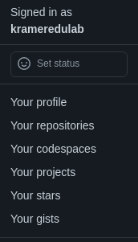
-
Hacer clic en New project.
-
Seleccionar la plantilla para la primera vista del proyecto a crear como, por ejemplo, Board:
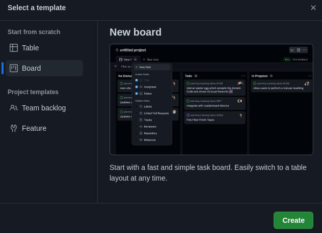
-
Hacer clic en Create para crear el proyecto.
-
Indicar el nombre descriptivo del proyecto y el de su primera vista. A continuación, se muestra un proyecto cuya vista elegida es el tablero (board):
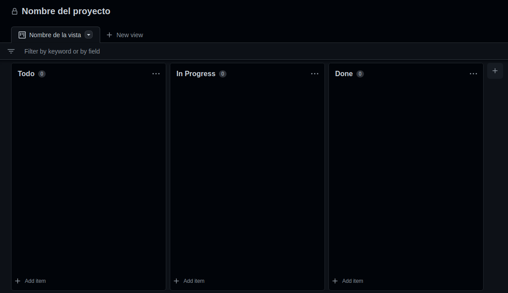
Supresión de proyecto de usuario
Para suprimir un proyecto, seguir los siguientes pasos:
-
Abrir el proyecto.
-
Ir a las opciones del proyecto. Para ello, mostrar su menú contextual, haciendo clic en los tres puntos (
...) y, a continuación, en Settings: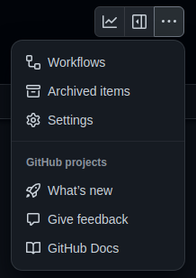
-
Ir a la sección Danger zone y hacer clic en Delete this project:
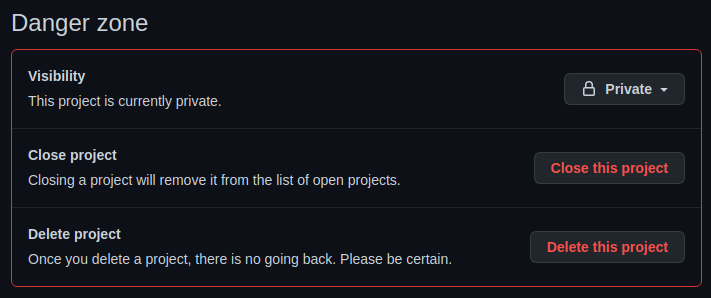
Uso de proyectos en un repositorio
En el portal de GitHub, es posible configurar si deseamos que aparezca la pestaña Projects de un repositorio. No hay más que ir a las opciones generales del repositorio y buscar la sección Features. En ella, encontramos todas las funcionalidades disponibles en el proyecto. No tenemos más que buscar Projects y activarla o desactivarla según nuestras necesidades:
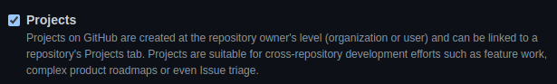
Si la activamos, aparecerá la pestaña Projects en el repositorio y, así, podremos asociarle aquellos proyectos que consideremos oportunos. Esto generalmente significa los que tienen ítems relacionados con él. Por un lado, indica dónde se encuentran las tareas asociadas a ese repositorio y, por otra parte, proporciona un acceso rápido del proyecto.
Gestión de acceso
El acceso (access) hace referencia a quiénes pueden acceder y colaborar en el proyecto.
Por un lado, tenemos que los proyectos pueden ser públicos o privados, al igual que los repositorios. Su visibilidad (visibility) se configura en la sección Danger zone de las opciones del proyecto.
Por otro lado, podemos configurar los colaboradores mediante la sección Manage access, ubicada también en las opciones del proyecto. En primer lugar, hay que invitar al colaborador, mediante la sección Invite collaborators:
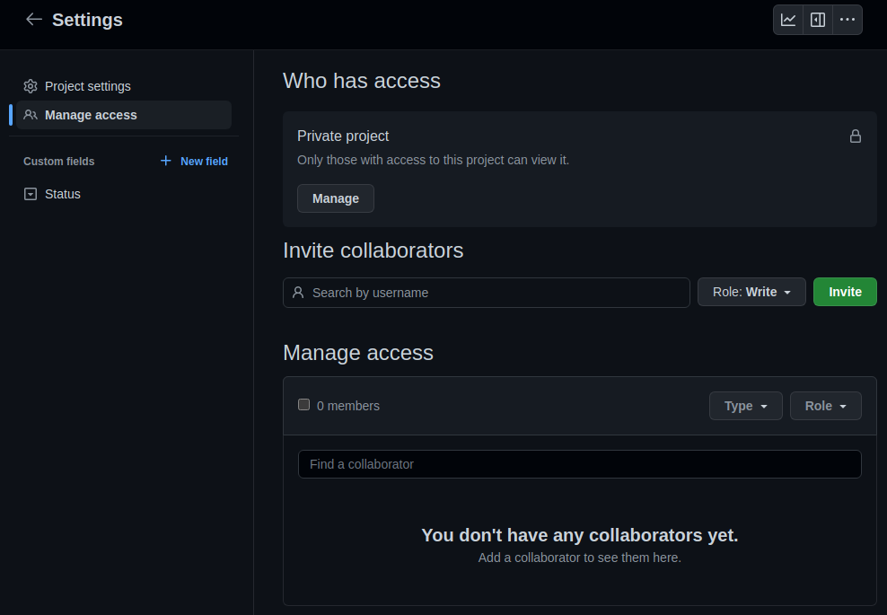
A cada colaborador, podemos asignarle un rol u otro atendiendo a lo que podrá hacer:
-
Read, puede acceder en modo lectura al proyecto. Si el proyecto es público, cualquiera podrá leerlo. Este rol sólo tiene sentido si es privado.
-
Write, puede leer y escribir en el proyecto, pero sin poder invitar a otros colaboradores.
-
Admin, ídem a Write, pero además puede invitar a otros colaboradores.
Vistas
Una vista (view) es una forma de presentar los trabajos del proyecto. Puede ser en forma de tabla o de tablero, lo que más le guste. Lo importante es saber que un proyecto puede tener tantas vistas como sea necesario para satisfacer nuestras necesidades.
Por ejemplo, y tal y como puede observar en el proyecto de Akromio, https://github.com/akromio?tab=projects, existe un campo When (cuándo) que indica en qué momento se debe realizar o atender el ítem. Concretamente, para el año 2023 hay siete posibilidades: 2023, 2023/B1, 2023/B2, 2023/B3, 2023/B4, 2023/B5 y 2023/B6. Cuando se sabe que se debe desarrollar en el año 2023, pero todavía no se sabe en qué bimestre, se le asigna 2023. En cambio, cuando se sabe el bimestre en el que debe realizarse, se fija el valor del bimestre en cuestión: 2023/B1, 2023/B2, 2023/B3, 2023/B4, 2023/B5 ó 2023/B6. Para el bimestre en curso, se crea una vista particular que filtra sólo aquellos ítems que se deben realizar en ese bimestre en particular. Así, es muy fácil observar y concentrarse en las tarjetas del hito actual. Concretamente, para el primer bimestre, la vista adicional tiene el siguiente filtro when:”2023/B1”. Y cuando se esté acercando el segundo bimestre, se creará otra vista que tendrá como filtro when:”2023/B2”. La idea es mantener una vista General que contiene todas las tarjetas y otra para el bimestre en curso.
En cambio, en Kramer Edulab, tenemos un tablero para todos los libros de una determinada serie editorial. En su vista General, tenemos todas las tarjetas relacionadas con todos sus libros. Pero para cada libro en particular, existe una vista que muestra lo que le es específico. Por ejemplo, para este libro, el filtro de su vista particular es repo:”krameredulab/github-projects-and-issues”.
Apóyese en las vistas siempre que lo necesite según sus necesidades. Son extremadamente útiles.
Vista tablero
La vista tablero (board view) presenta los ítems atendiendo a su estatus:

La idea es ver el flujo de trabajo por el que debe fluir un ítem, además de servir como punto de comunicación de lo que se está haciendo, de lo que se ha hecho y de lo que está pendiente de hacer. Además puede ayudar a detectar cuellos de botella si se observa que hay varios ítems en el mismo estatus que empiezan a acumularse como, por ejemplo, ítems bloqueados en los que no se puede seguir trabajando por alguna cosa.
A cada columna del tablero, se le conoce como estatus (status), se considera que refleja la situación en la que se encuentra. Por lo general, se recomienda tener un tablero simple con pocos estatus o columnas como, por ejemplo:
-
Backlog, pendientes de hacer. Describen cosas que hay que hacer, pero todavía no están descritas a la perfección.
-
Todo, pendientes de hacer pero listas para ser atendidas. Esto significa que deben estar perfectamente descritas, algunas veces se utiliza más el término refinado (refined), para que la persona del equipo de desarrollo que la coja no tenga dudas de lo que debe hacer y de por qué.
-
In Progress, actualmente bajo desarrollo.
-
Done, hecha y terminada.
Groso modo, el flujo de una tarjeta sería: Backlog -> Todo -> In Progress -> Done. Para que un ítem pase de Backlog a Todo es necesario que se encuentre bien analizado y descrito y contenga lo que hay que hacer. Esto es así en los proyectos donde se trabaja en equipo. Si estamos ante un proyecto personal, puede haber un cierto grado de flexibilidad. Esto no es un dogma, es simplemente una forma de trabajo. Está claro que si alguna persona del equipo coge un ítem de Todo y este no está bien descrito, tendrá que perder tiempo en averiguar qué debe hacer. Eso es un desperdicio que no deseamos se produzca.
Vista tabla
La vista tabla (table view) presenta los ítems en forma de tabla, de manera muy similar a una hoja Excel.
Elementos
Un elemento o ítem (item), también conocido como tarjeta (card), representa un trabajo o tarea a realizar. Tienen un título y una descripción. Además, se pueden asociar a propuestas (issues). Podemos crear una propuesta desde un ítem o tarjeta, o bien crear una tarjeta o ítem desde una propuesta. Para gustos, colores. Los elementos que no tienen asociada una propuesta se conocen formalmente como ítems borradores (draft items).
Creación de elementos
Para añadir un elemento a un proyecto, en nuestro caso, mediante una vista tablero:
-
Ir al proyecto.
-
Seleccionar la vista tablero. Puede hacerlo desde una vista tabla de manera muy similar.
-
Determinar la columna a la que añadir el elemento, generalmente, será Backlog y, entonces, hacer clic en + Add item, ubicado en su parte inferior:
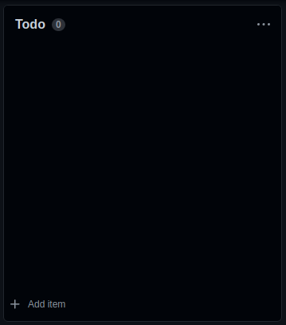
A continuación, escribir el título del nuevo ítem. Si lo que desea es crear un ítem a partir de una issue existente, puede copiar la URL de la propuesta como título y la enlazará al nuevo ítem.
Asociación de una propuesta a un ítem
Recordemos que todo elemento de un proyecto puede tener una propuesta (issue) asociada. Si no la tiene, se lo considera un borrador (draft). Cuando tenemos un borrador, podemos crear una issue en el repositorio correspondiente mediante el propio elemento. Para ello:
-
Hacer clic en el elemento para que aparezca su formulario de edición.
-
Hacer clic en Convert to issue para crear y asociar la propuesta:
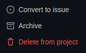
-
Seleccionar el repositorio en el que crear la propuesta.
Visualización de campos
En ocasiones, es muy útil personalizar lo que mostrará un tablero (board) de cada tarjeta. Por ejemplo, de todos los campos dados de alta, podemos indicar que muestre sólo algunos de ellos, los que consideremos necesarios para la vista en cuestión. Esto es muy fácil de hacer, basta con ir a la vista en cuestión, mostrar su menú contextual y en él podemos observar la configuración actual:
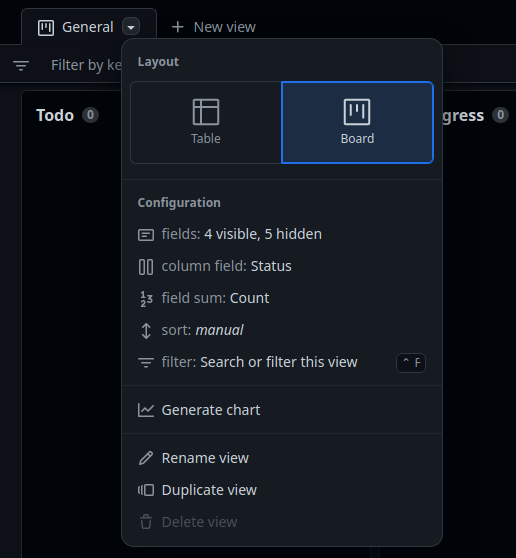
fields indica cuántos campos se mostrarán y cuántos no. Para conocer cuáles se están mostrando o para configurar cuáles mostrar, haremos clic en él y pasaremos a indicar aquéllos que deseamos aparezcan en las tarjetas del tablero:
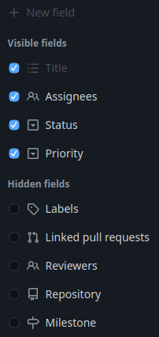
Una vez hechos los cambios, al volver a la vista, no olvide hacer clic en Save changes en la barra de filtro. Observará un circulo azul en la pestaña de la vista, esto quiere decir que ha hecho cambios y debe guardarlos o se perderán.
Eventos de GitHub Actions relacionados con los proyectos
A pesar de que este no es un libro de GitHub Actions, es importante conocer y, por lo tanto, presentar en familia algunos eventos disparadores de flujos de trabajo. Estos eventos se producen en GitHub Projects y pueden disparar flujos de trabajo de GitHub Actions para reaccionar a ellos de alguna manera que pueda resultar útil. Cuando GitHub Actions se encuentre en su día a día, si no lo está ya, no tendrá más que volver aquí y echar un vistazo.
Evento project
GitHub genera el evento project (project event) cada vez que se produce alguna cosa relacionada con un proyecto de GitHub Projects. Como pasa a menudo con algunos eventos de GitHub Actions, la reacción puede afinarse con la propiedad types del evento que consiste en un array de textos, cuyos valores, en este caso, pueden ser:
| Valor | Descripción |
|---|---|
| created | Se acaba de crear un proyecto. |
| closed | Se acaba de cerrar un proyecto. |
| reopened | Se acaba de reabrir un proyecto cerrado. |
| deleted | Se acaba de suprimir un proyecto. |
| edited | Se acaba de editar un proyecto. |
Veamos una configuración de ejemplo de este tipo de evento:
on:
project:
types: [created]
La propiedad event del contexto github permite acceder a los datos concretos del evento al que estamos reaccionando. En este caso, consistirá en un objeto entre cuyas propiedades encontramos:
| Propiedad | Descripción |
|---|---|
| owner | Objeto representativo de la cuenta propietaria del proyecto. |
| creator | Objeto representativo de la cuenta que creó el proyecto. |
| number | Identificador numérico del proyecto. |
| body | Texto con la descripción del proyecto. |
| columns | Array de objetos con la información de las columnas. |
| url | URL del proyecto. |
Evento project_card
Mediante el evento project_card (project_card event), podemos reaccionar ante un ítem del proyecto. Su propiedad types es un array de valores:
| Valor | Descripción |
|---|---|
| created | Se acaba de crear un nuevo ítem. |
| moved | Se acaba de mover un ítem de una columna a otra. |
| converted | Se acaba de crear la propuesta de un ítem. |
| edited | Se acaba de editar un ítem. |
| deleted | Se acaba de suprimir un ítem. |
Para acceder a los datos del evento, usaremos github.event:
| Propiedad | Descripción |
|---|---|
| project | Objeto representativo del proyecto. |
| creator | Objeto representativo del creador del ítem. |
| column | Objeto representativo de la columna en la que se encuentra el ítem. |
| state | Estado del ítem. |
| url | URL del ítem. |